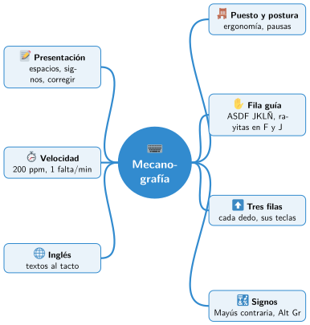

Bloque I · El ordenador y el teclado
UD02 Mecanografía
RA1Procesa textos alfanuméricos en un teclado extendido aplicando las técnicas mecanográficas.
Sesiones
- Sesión 2.1 El puesto de trabajo y la postura
- Sesión 2.2 La fila guía
- Sesión 2.3 Las filas superior e inferior
- Sesión 2.4 Mayúsculas, números y signos
- Sesión 2.5 Velocidad, precisión y textos en inglés
Al terminar la unidad
- 🛠️ Práctica con las herramientas
- 📝 Repaso de la unidad
- ✅ Autoevaluación
- 🎯 Situaciones de aprendizaje del bloque
Mapa mental de la unidad

✏️ Repasa la unidad con el mapa: tapa una rama y explica en voz alta lo que pone.